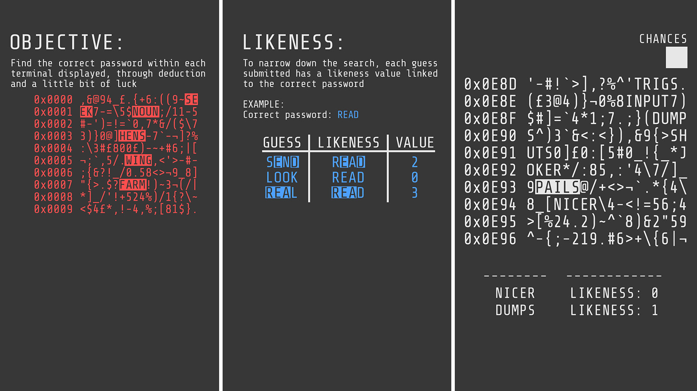
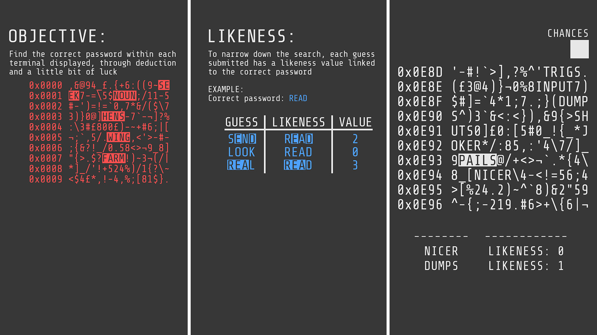

I taught myself how to build a bot for the messaging/VoIP application Discord, switching between
discord.py and discord.js.
That would allow me to add some extra features to the server that my friends and I share.
It works by responding to defined commands, indicated by a forward-slash command prefix, followed by a command such as "diceroll", which will simply return a number between one and six.
To a level of progression to the bot, I implemented a load/save system, storing data with JSON files. Doing this allowed me to create and keep track of a virtual currency, which led to the
addition of a roulette game, coinflip, and currency leaderboard. As well as a case opening clone from the game CSGO, which allows a player to "open a case" using virtual currency, storing the
unboxed item of varying quality (indicated by colouring with text syntax) within their "inventory" as JSON data. Which could then be sold, or kept. For this bot to work, however it relied on my computer
running. So naturally, I learnt how to program a Raspberry PI, and then moved the bot program onto it which I could then leave on almost 24/7.
Python
RaspberryPI
Json
Myself


 
